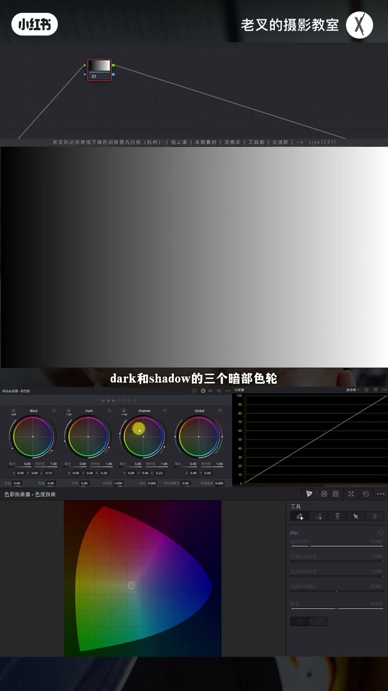
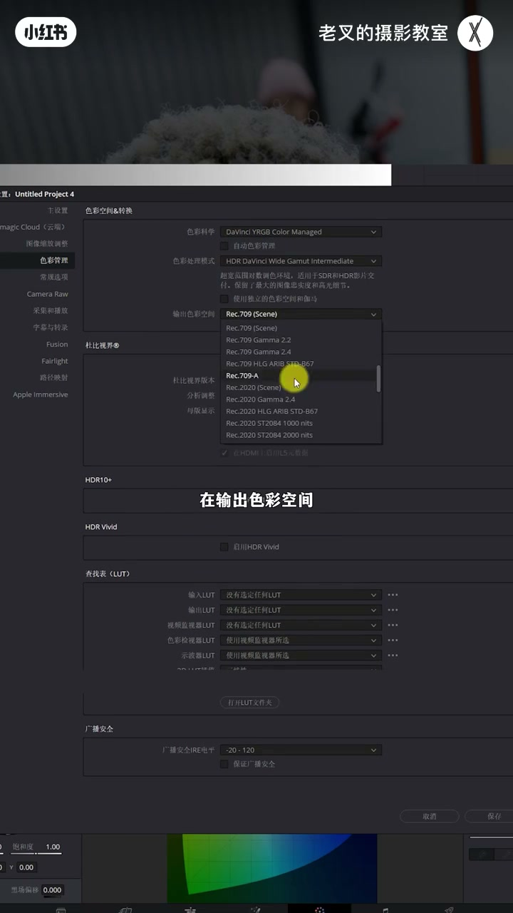
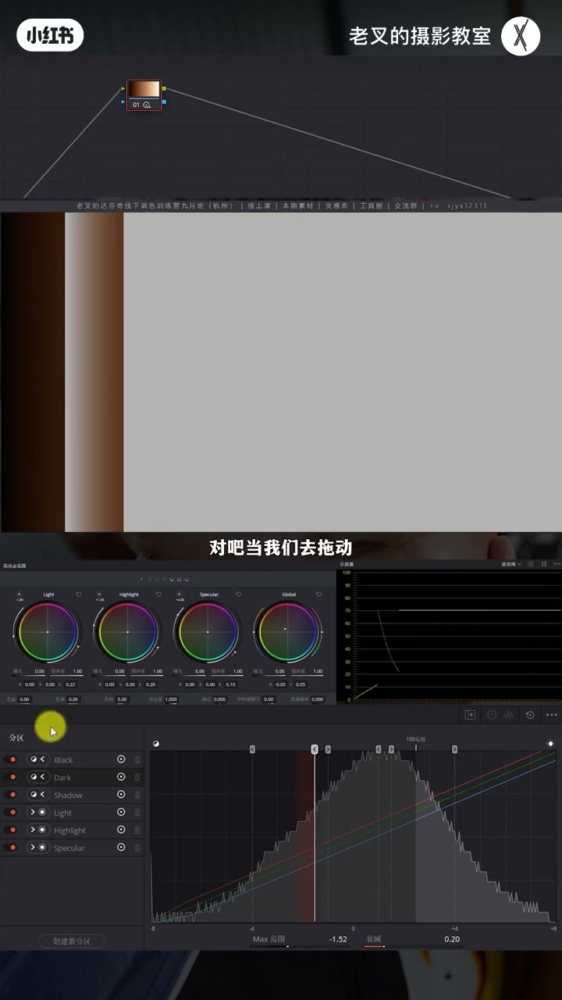
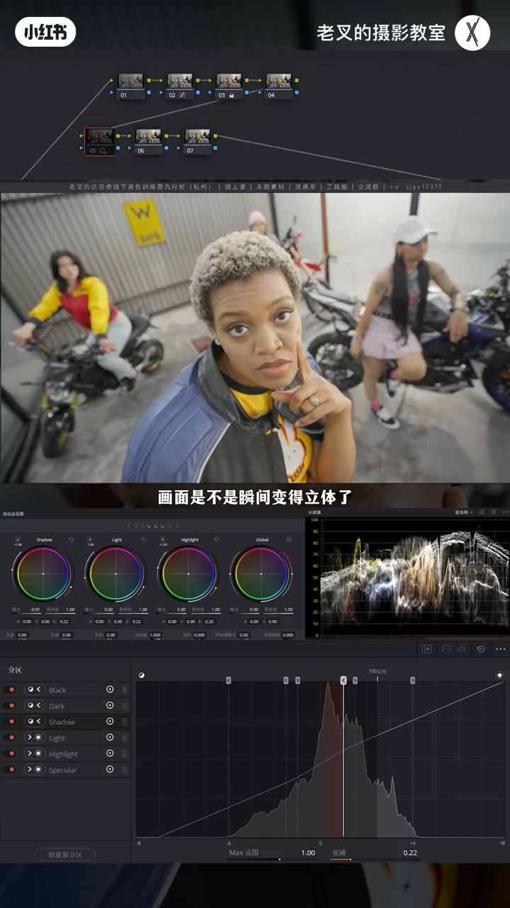
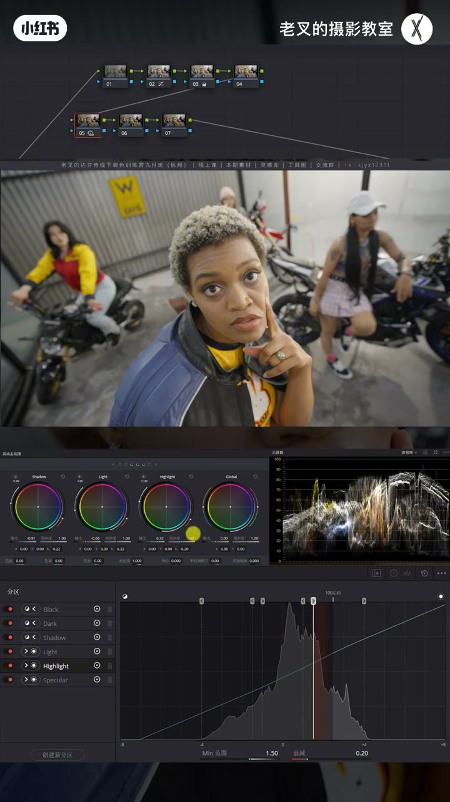
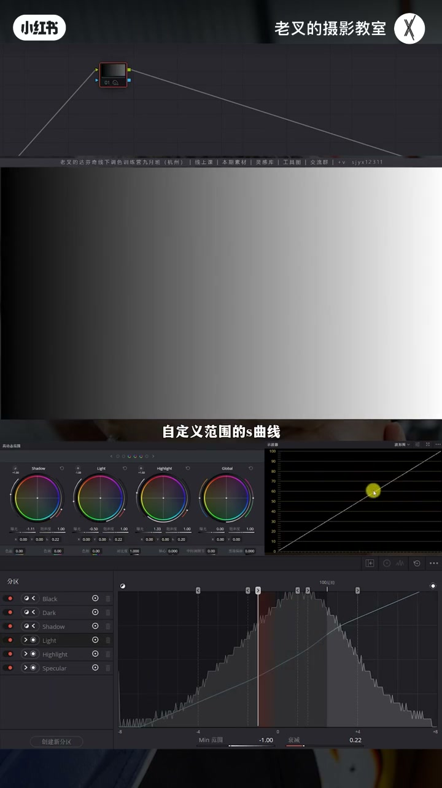

内容要点
HDR 色轮名字来自处理高动态范围，但同样可用于 SDR。六分区从暗到亮：Black/Dark/Shadow 与 Light/Highlight/Specular，加 Global。未开广色域时 Specular 常无效；达芬奇广色域后可用。范围可拖分区竖线/白色波谷改，衰减控柔化。实战常 Shadow 压暗、Light 出灰面、Highlight 护高光，相当于自定义范围的 S 曲线。
知识结构
设计为 HDR，但 SDR 同样有效。
暗轮只动左侧、亮轮只动右侧；Specular 需广色域。
竖线改起点；白波谷改范围；红波谷=衰减柔化。
降 Shadow → 降 Light → 抬 Highlight 出灰面层次。
可加蓝；并行蜘蛛网保暖肤。
HDR 色轮不是 HDR 专用。弄清左右分区与广色域下的 Specular，用 Shadow/Light/Highlight 组合展层次；范围与衰减可调，相当于精细版分区 S 曲线。
00:00-03:12面板：暗三亮三 + Specular 与广色域
开场即强调：任何素材都能用。默认从左到右 Black、Dark、Shadow，再 Light、Highlight、Specular，另有 Global。黑白渐变上：Shadow/Dark 主要改左半暗区，起点越暗范围越偏黑；Light/Highlight 改右半，越亮起点越右、范围越小。
未做色彩管理时动 Specular 画面不变：齿轮→色彩管理→达芬奇广色域（取消自动），输出如 Gamma 2.4 或 709A。Rec.709 下高于约 100 尼特信息处理不到，Specular 无作用；广色域后正常。


03:12-05:46范围可调；衰减是柔化不是范围
展开完整面板：直方图上方竖线对应各轮，箭头示影响方向。Shift+H 突出显示可看范围。拖竖线改起点；左侧白色波谷也可改范围但有上限，右侧分区面板可无限制拖。红色波谷与「衰减」相同——改柔化而非范围：衰减小更硬、大更柔。还可创建新分区（默认可删自定义）。

05:46-08:20实战：压 Shadow、出灰面、护 Highlight
人像还原后层次弱：缺够暗的暗面与灰面。降 Shadow 立刻立体；过渡仍硬则降 Light（默认含大量中灰）出灰面，高光被带暗再抬 Highlight。脸部层次更丰富、高光不再一片。黑白渐变上同操作≈自定义范围 S 曲线。可略加蓝，肤色受影响则并行蜘蛛网找回暖。



完整转录（271段）
以下文本由 Whisper medium 模型自动转录，可能存在少量识别误差，已尽可能修正。
HDR色轮怎么用
我们说在最前面
任何素材都能使用HDR色轮
它的名字源于它处理高灯带范围图像数据的能力
我们可以看到面板
在默认的排布下
从左往右
它分别是Black、Dark和Shadow的三个暗部色轮
在往右则是Light、Highlight和Specular的三个亮部色轮
还有一个全景影响的Global色轮
这种划分是为了应对HDR内容更宽的亮度范围
允许调色师在极暗和极亮的区域
进行更精准独立的调整而不会互相干扰
虽然说它的设计初衷是为了更好地处理HDR内容
但它同样可以非常有效地用于标准动态范围
也就是SDR的素材的调色
原理不讲太多
我们直接看操作
当我们有一张黑白渐变图
从左到右分别是从暗到亮
我们刚刚提到HDR色轮分为暗部色轮以及亮部色轮
通过名字我们也能够明确
HDR色轮也是从左往右从暗到亮
对吧
Black就是最黑的
Dark稍微亮一点但还是黑的
Shadow则是更亮一点的黑
往右Light Highlight Speculum
那就是一丝变亮
如果此时我们看到
当我们改变了暗部色轮中
相对最亮的Shadow色轮的曝光时
我们看到画面中它左半部分的区域受到了影响
受到了改变
我们用颜色来调吧
颜色调会更加明确
当我们用Shadow色轮给暗部加了一定的颜色之后
在画面中呈现出来的
就是左半部分受到了影响
右半侧是不会受到任何的改变的
那如果说此时我们选择一个更暗的Dark色轮
它的影响范围也同样在左侧
不过影响的起点更暗了
那这一点我们从波线图也看得出来
使用HDR色轮如果我们改变的是曝光
它的所有的形态都会以一个大肚子的一个形态来呈现
对画面改变的力度
离影响的起点越近力度越大
对吧
Dark也是一样
它离起点越近
影响的力度就越大
Black也是如此
不过它影响的范围非常小
这三个暗部色轮它只影响左侧
那么亮部色轮是不是也有相同的一个规律呢
当我们去改变亮部色轮中相对最暗的Light色轮曝光时
我们看到影响的范围只有在右侧
而选择相对更亮的Highlight色轮时
它的起点更往右更亮
而它的范围越小
最后就是Specular色轮
你会发现此时我们在动Specular色轮的时候
画面不做任何的改变
因为我们并没有去做任何的色彩管理
打开达芬奇右下角齿轮的设置中
我们左侧第四个选项色彩管理
我们可以将色彩管理设置为达芬奇广色域
也就是在第一个色彩科学中选择第二个最长的
取消勾选自动色彩管理
再在第二个选项中选择达芬奇广色域
在输出色彩空间可以根据你的需求
一般来讲我们可以选Gamma2.4或者是709A
这个我们今天不细讲
将它设置完了之后我们点保存
此时我们去改变Specular色轮
我们看画面以及波星图
它就能够有影响
虽然说HDR色轮能够处理SDR素材
但是若你的色彩空间处在709的环境下
量于100尼特的信息就无法被处理
所以Specular没有作用
那我们把色彩管理做成了达芬奇广色域之后
Specular它就能够正常使用了
了解了这个基础的用法之后
大家有没有疑惑
每个色轮的范围难道是固定的吗
并不是
我们可以打开HDR色轮右上角这个按钮
展开HDR色轮的完整面板
在右侧这个面板中
我们能够看到有一个直方图
而在直方图的上方有非常多的这个竖线
而每一根竖线就对应了一个色轮
在每根竖线的上方都有一个箭头
这个箭头就代表着色轮影响的方向
向左就是暗部色轮只会影响到暗部
向右是亮部色轮
我们可以先给画面做一个全局染色
这样看着会直观一点
然后呢
按住Shift加H打开突出显示
那此时我们选择色轮
就能够更加清晰的看到
每一个色轮它对应的范围
它的范围就是按照曝光作为区分的
以Dark色轮为例
它此时影响的范围就是左侧的暗部
对吧
当我们去拖动
每一个色轮对应的竖线时
就能够改变这个色轮的起点
越往右拖
它的起点越亮
那向左就是反直
除了改变曝光和颜色以外
HDR色轮还能改变某一个区域的饱和度
这个在每个色轮下有对应的一个选项
除了改变分区中的竖线
来改变色轮对应的范围以外
改变色轮左侧的白色波感也能够实现
同样我们也选择Dark色轮为例
当我们去改变左侧这个波感的时候
它也能够去做一定的改变
但是要注意的是
在左侧波感改变它的范围的时候
它是会受限的
它不能突破一个限定值
但是在右侧这里分区面板中
你可以无限制的去改变它
这个白色波感在每个色轮中都会有
除了全局影响的Global色轮
因为它是全局影响
不需要它去改变范围
而在右侧有一个红色波感
这个红色波感是干嘛的
在分区的右下角也有一个工具叫做衰减
这两个调整的内容是一模一样的
要注意的是
改变衰减不是改变它的范围
而是改变它的柔化
HDR色轮的变化默认不是硬性的
假如说我们用Highlight色轮
给画面加一点点暖
我们从分区的直方图上也能看得到
它在原有的一条蓝色的线的基础上
拆解了它原有的颜色比例
加暖那自然就是让红色变多 蓝色变少
而这种变化它是渐变的
从起点开始逐渐变强
如果我们降低衰减
我们能够看到
渐变就变弱
变化就变得更加生硬
如果增加衰减
柔化的力度就会增加
在这里改变衰减
和在色轮右侧这里改变红色波感
其实是一模一样的
有意思的是
HDR色轮的数量
在理论上是可以无限增加的
点击分区面板的左下方
这里有一个创建新分区
你可以根据你的需求
你去无限制的去创建新的一个分区
新建的分区也可以去删除
默认的是不能删除的
讲到这里
大家是不是对HDR色轮
就已经完全掌握了
非常简单对不对
那又怎么应用呢
我们看到这个画面
简单坐下还原之后
我们发现画面乍一看
好像还好
但实际上层次非常非常弱
画面中有明确的色光
可是人物的立体感却无法体现
究其原因就是因为它
暗的不够暗的同时
缺少了灰面
所以我们可以考虑
降低Shadow色轮的曝光
来把暗面调暗
我就到这里差不多
我们看到
画面是不是瞬间变得立体了
但此时
暗面的暗是有了
灰面还不够
画面从亮到暗的过度太生硬了
通过这个渐变图我们能够看到
在默认范围内
Light色轮涵盖了
绝大部分的中灰区域
而此时我们的画面
因为中灰亮度太高
所以我们需要降低中灰的曝光
那也就是降低Light色轮的曝光
降低了之后
灰面就有了对不对
但是高光受到了影响
它也被掩暗了
所以我们可以再次去提高一点
Highlight色轮的曝光
那此时
人物是不是就变得更加立体了
该亮的亮该暗的暗
该有的光影表现也变得更加明显
我们可以抓一个竞争来做下对比
这个画面是只降低了
Shadow色轮的曝光
这个画面是降低了Light色轮
然后提高了点Highlight色轮的曝光
我们能够看到
人物脸上的层次
再经过我们刚刚这样的调整
是不是更加立体了
而且在人物的左脸上
它这里的高光
也不会像之前一样亮成一片
整体的画面就会变得更加立体
不像之前
这个层次特别特别弱
对吧
效果是非常好的
而我们刚刚做的这个行为
我们可以把它应用在黑白渐变图
看看它的结果是怎么样的
也就是降低Shadow色轮
然后同步的降低一点Light色轮
再提高点Highlight色轮的曝光
我们能够看到波星图的变化
它就是做了一个
自定义范围的S曲线
对不对
整体的画面就会变得更加立体
亮面变得更亮
灰面保留
暗面变得更暗
那这样的一个操作
就能够让你的画面变得更有层次
那对于这个素材
我觉得可以给画面再加一点点蓝
让它能够
呈现出更冷的一个效果
如果你觉得肤色受到太多影响
可以按照L的加P来个并行节点
把肤色利用蜘蛛网去给它找回来一点
让它稍微暖一点
保温度稍微高一点
这样的一个结果
就能够让这些暖的保持暖
同时其他部分
都能够呈现出一定的冷色
效果还是不错的
HDR色轮的应用场景非常广泛
而且它是非常非常有力的一个工具
今天只是大概讲了一下使用逻辑
后续我还会持续以实战为角度
分享HDR色轮的具体应用
素材大家可以领过去之后
自己去感受一下
HDR色轮的一个具体使用的方式
讲到这里
如果你觉得对你有帮助的话
还希望多多赞联
好了这期就到这里
886